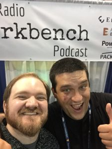
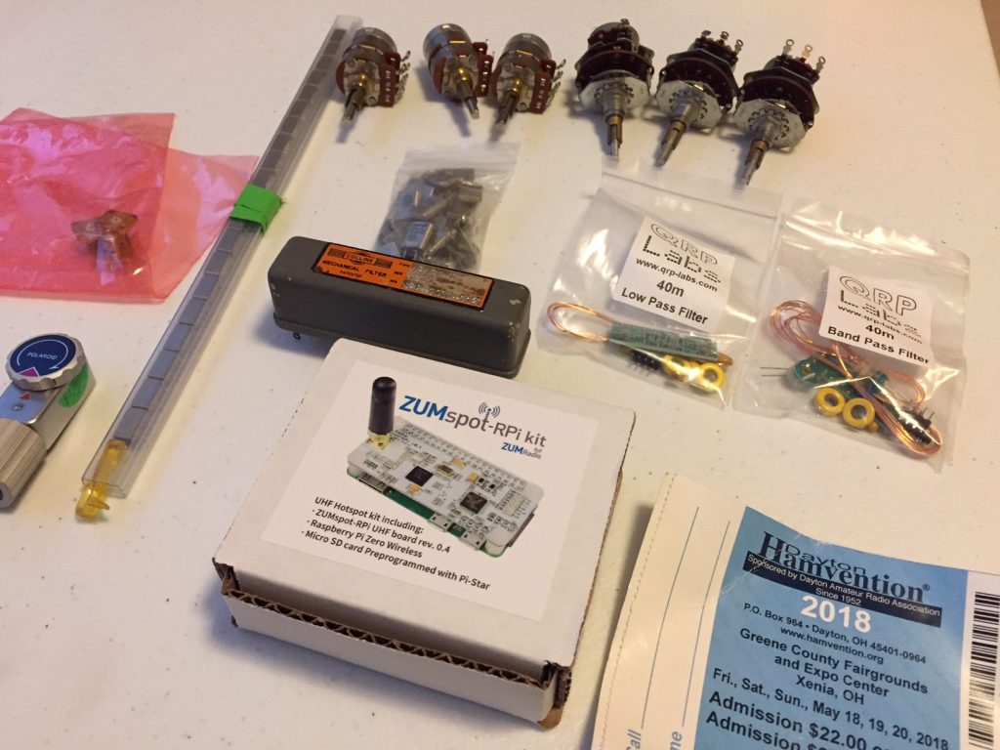

This post is cross-posted to my ham radio-specific blog, kk9jef.wordpress.com.
While I'm still exhausted from the travel and the good times, I wanted to put up a little note from this year's Hamvention, the largest annual gathering of ham radio operators in North America. I only decided a week ago that I was going - I left Friday after work, drove 5 hours to Dayton OH (well, Xenia), and crashed at a hotel. Up bright and early, spent the day at the convention and checked out some local beer and grub in Dayton. Sunday, caught an early breakfest with some friends new and old, then got on the road back to Chicago. What a ride!
Others are doing fuller summaries of the convention - SWL-ing post always does a photo wrap-up of both the indoor and outdoor experience, and the Ham Radio Workbench podcast from the event is now up.
Hamvention is a great place for meeting the hams you've yet to meet, and seeing again those you already know. I spent most of Saturday hanging out with the Workbench crew, but I also ran into hams that I knew from elsewhere. Plus this guy, who falls into both categories:
It's wild that 15 years after I accidentally introduced the future W6KWF to ham radio we hung out together at giant swapmeet in the middle of Ohio. Totally wild.
The flea market was certainly the biggest radio swapmeet I've ever been to - it's probably bigger than that De Anza flea market by a good 300% - but it wasn't all that special. I would say there was the usual assortment of used radios, test year, bits and parts, old tools... nothing super intriguing. Of course, I did get there on Saturday, so perhaps all the interesting things were just scooped on Friday.
It was neat to see a lot of the vendor products in person that I'd only heard about, but since I wasn't in the market for anything in particular, I didn't linger too long at any of the booths. Except Elecraft - those are some very, very attractive radios. I chatted with Wayne N6KR (one of Elecraft's founders) for about 15 minutes about the KX2 and its SDR structure, which, not to be a fanboy, was pretty exciting.
In the end, I don't know if I would go back the very next year - it was a really neat experience, and I'd go to see the people, but in this age of eBay, Amazon, and vendor websites, seeing everything in person and picking through the fleamarket feel just a little bit like a relic of the days when everything had to be done in person.
That said, I did find a few treasures... here's this year's haul:
Roughly from left to right:
Sometimes, you get back from a big trip or conference or meetup thinking Boy, am I worn out, I don't need to do any more of that thing for awhile. This time, I came how itching to get back to work, revive some projects that had been dormant for awhile, and make things. So for that, at least, Hamvention 2018 was worth it.